Una historia visual del recorrido del PIB a través de regARIMA y SEATS.
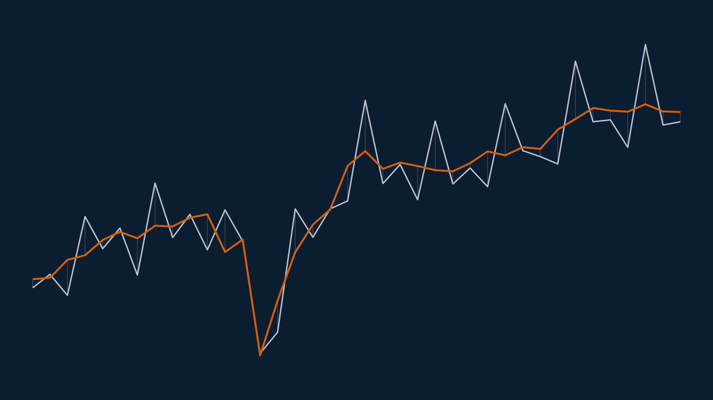
Una guía paso a paso para entender regARIMA, SEATS y la serie desestacionalizada del PIB chileno.
An experimental view of Ferrari models, production periods and proposed relationships.
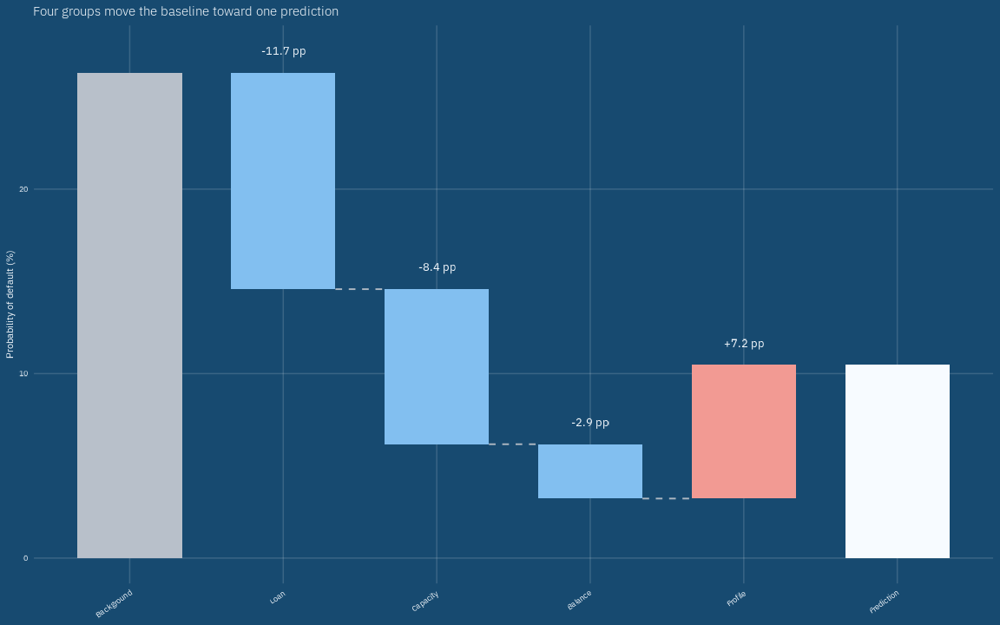
Build a SHAP explanation from the predictions produced while transforming a background observation into the observation we want to explain.
Revisiting Pokémon similarity with UMAP, ggplot2 and Highcharter.
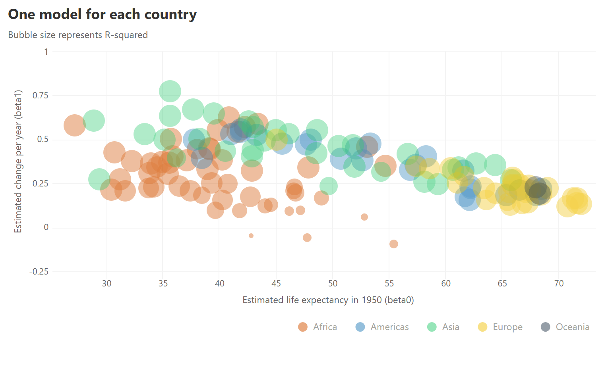
The talk that changed how I write R.
ggplot2
A practical collection of ggplot2 extensions I use often.
Explorando patrones, relaciones y estructuras en datos del Metro de Santiago.
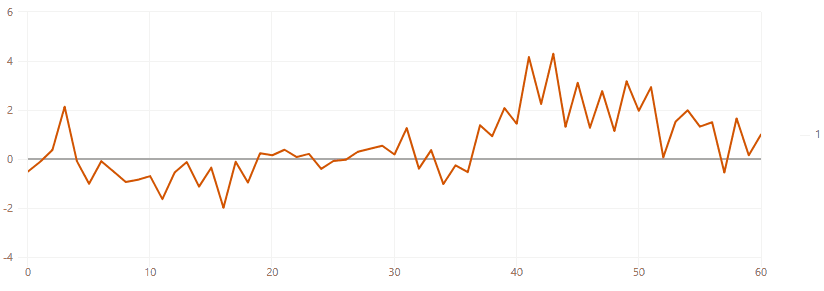
Simulating autoregressive processes and watching them evolve with highcharter.
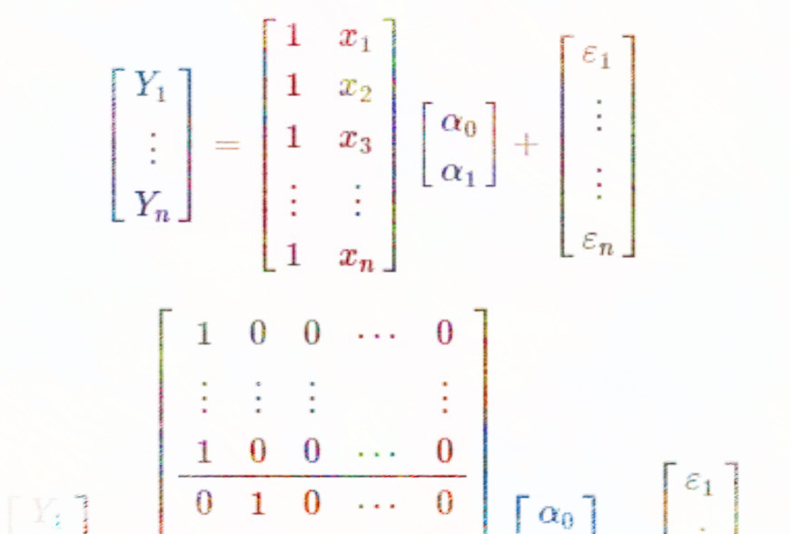
A reminder that regression, ANOVA and the t-test are closely related.
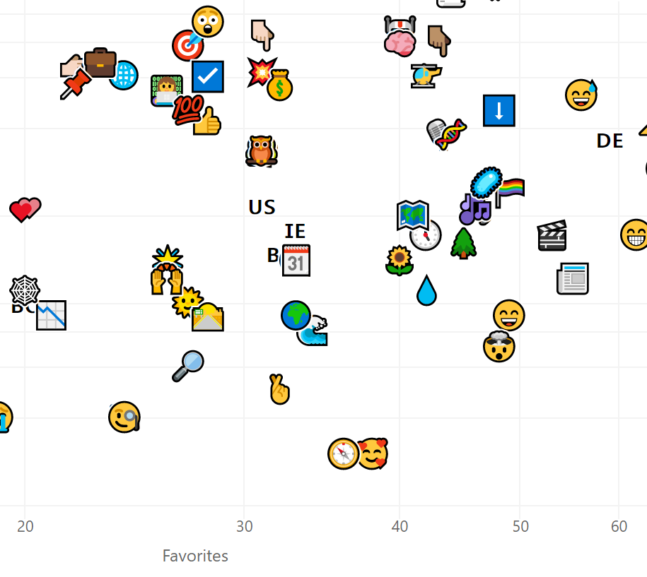
Two ways to treat emoji as data and graphical marks in an interactive chart.
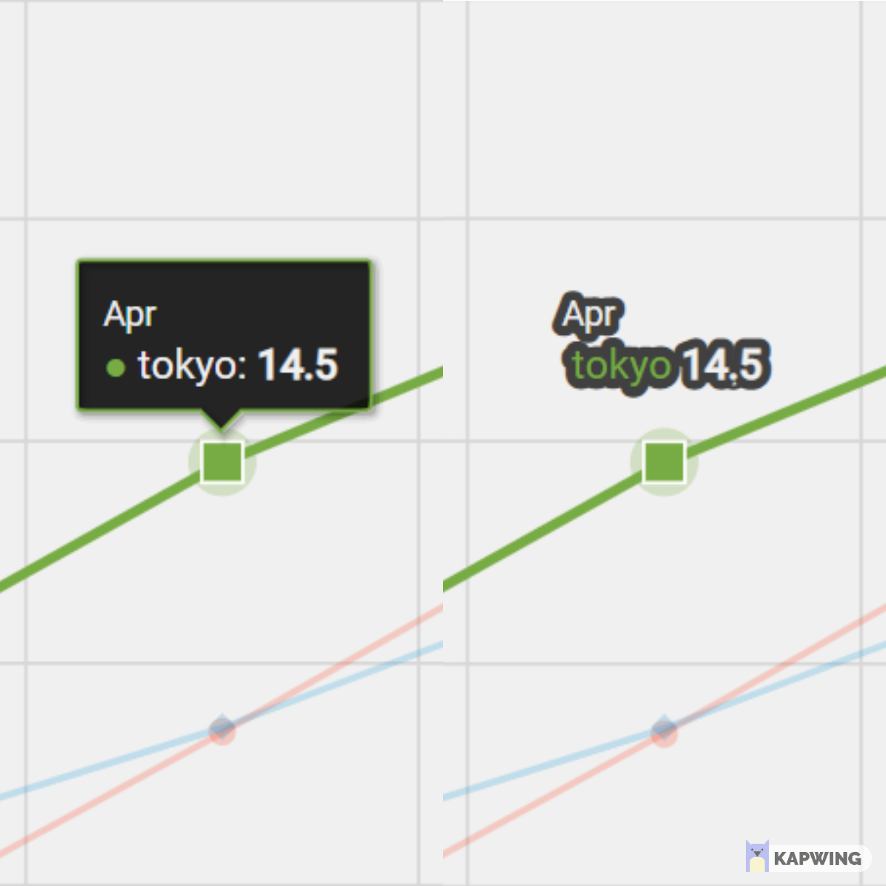
A small Highcharts recipe for readable tooltips when a chart needs less visual furniture.
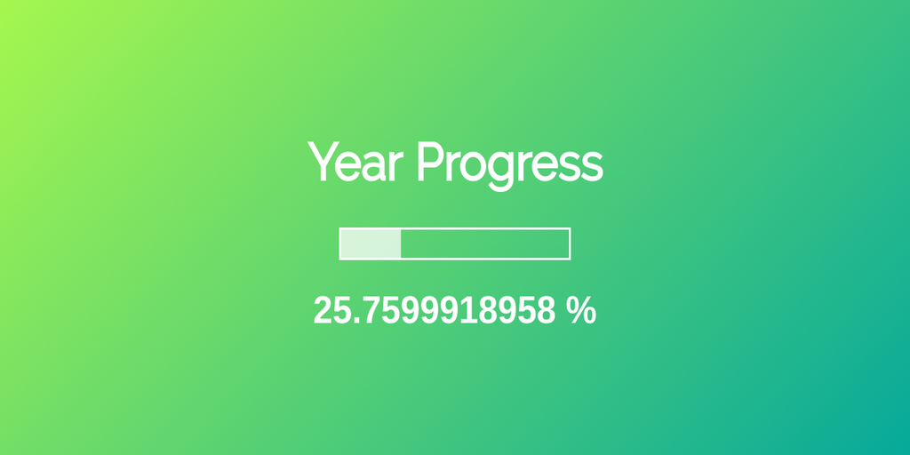
A historical look at how engagement changed as 2020 moved from 1% to 100% complete.
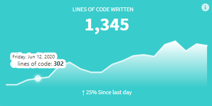
Adding sparklines and context to value boxes in Shiny dashboards.
Combining a streamgraph and stacked columns to reveal two views of the same data.
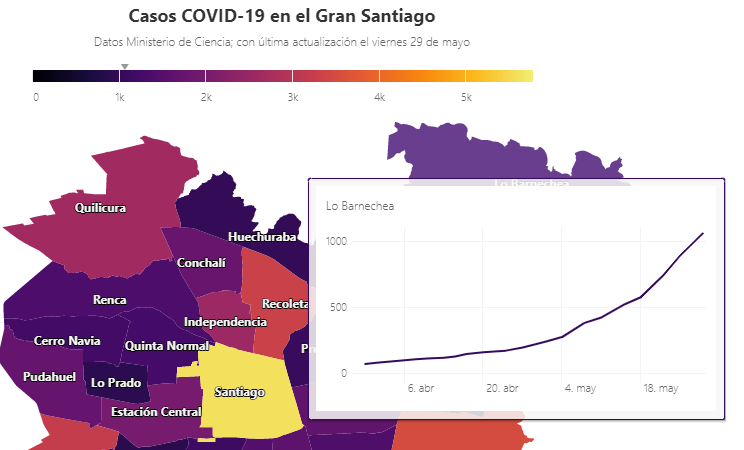
Más experimentos con anotaciones, texto, mapas y visualizaciones jerárquicas.
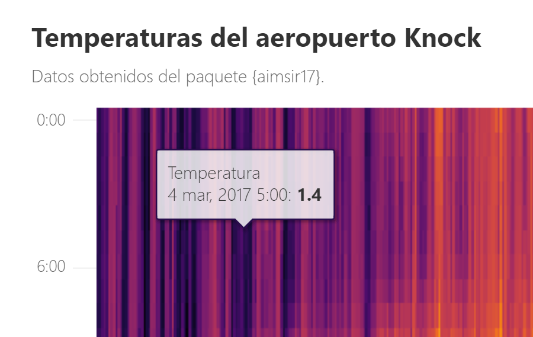
Diez nuevas visualizaciones y recursos interactivos con highcharter.
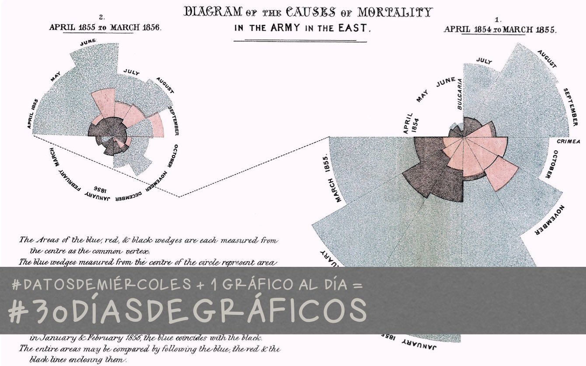
Diez ejercicios de visualización con R, ggplot2 y highcharter.
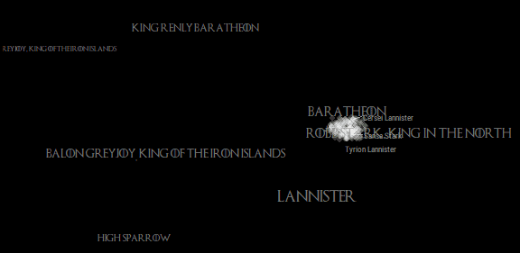
Animating how Game of Thrones characters shift affiliations across seasons.
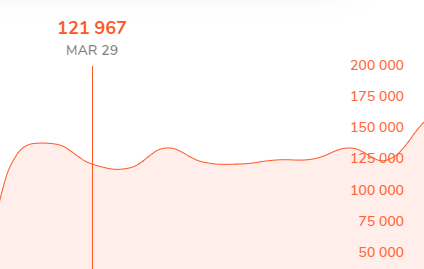
Recreating a quiet chart designed to blend into its surrounding web page.
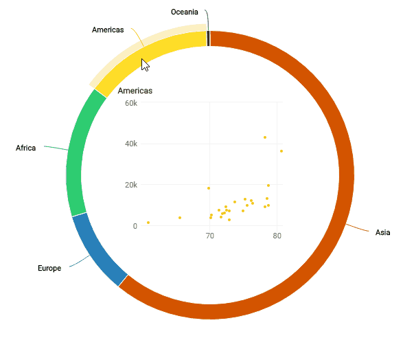
Rendering images, tables and even charts inside Highcharts tooltips.
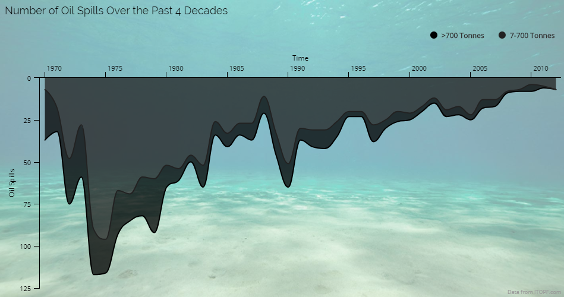
Adding thematic context and visual character to interactive charts.
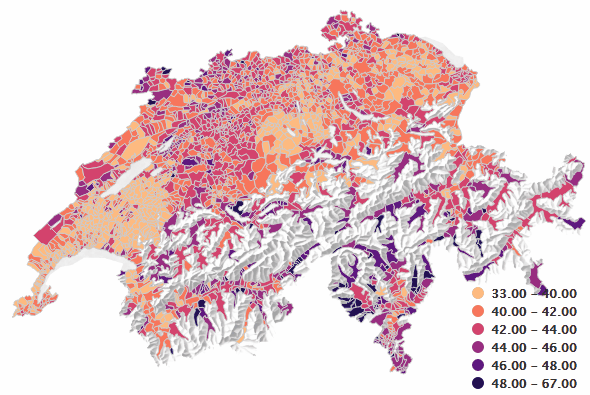
Recreating a thematic Swiss map as an interactive highcharter visualization.
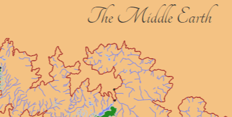
Building and styling an interactive map of Middle Earth with highcharter.
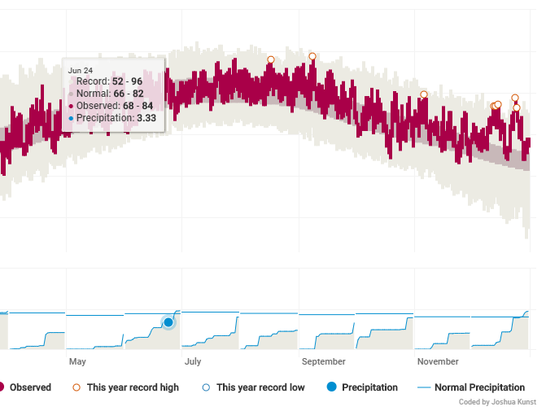
Recreating an interactive New York Times weather chart with highcharter.
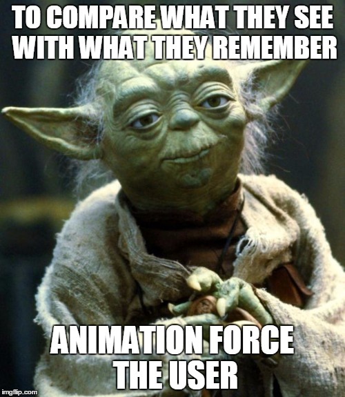
Comparing several ways to show the evolution of global temperature anomalies.
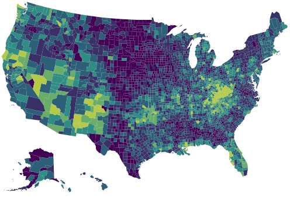
Using the Highcharts motion plugin to animate a choropleth map.
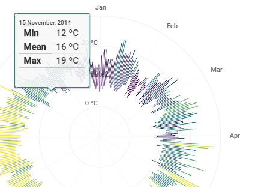
Creating weather radials with highcharter and ggplot2.
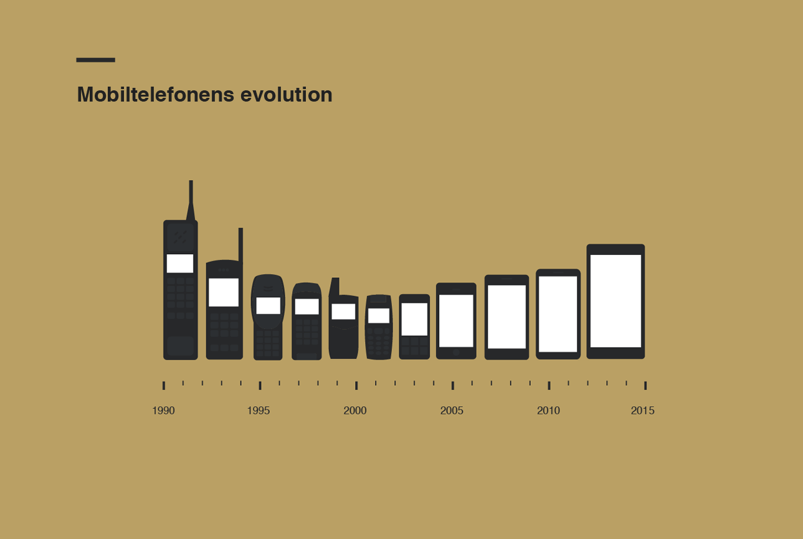
A historical look at how mobile phone size changed before and after the smartphone era.
A collection of chess visualizations created entirely with ggplot2.
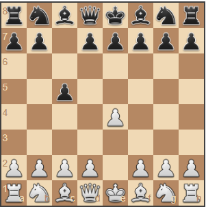
Exploring chess games, positions and notation with the rchess package.
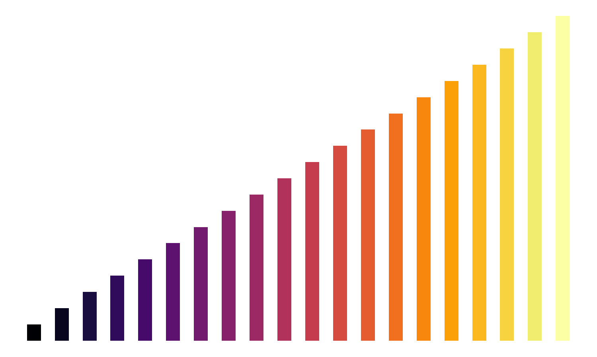
Visualizing sorting algorithms step by step with ggplot2.
A compact test of Quarto metadata, code, widgets, figures and page layouts.